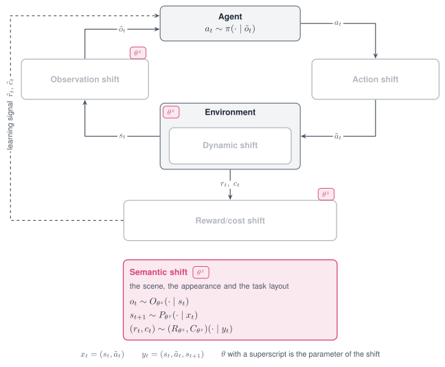
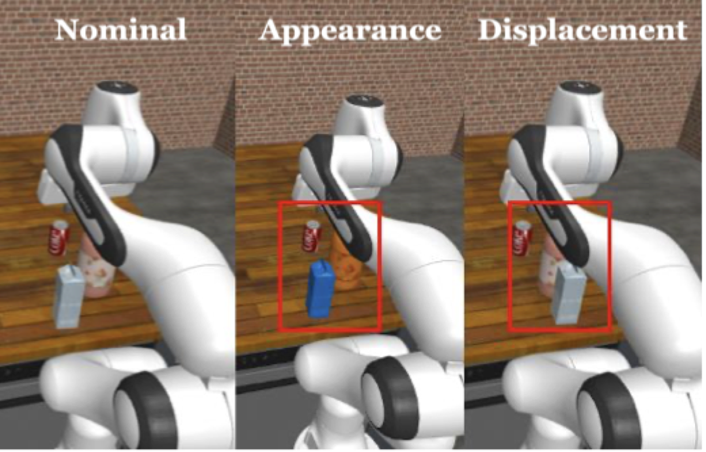

Semantic shift¶
A Semantic shift changes what the scene looks like and where things are. It edits the colour of objects, the lights and the cameras, and it displaces objects and cameras by a position offset.

The Semantic shift acts on the scene, and through it on the observation, the transition and the reward.

A nominal scene, an appearance change and a displacement.
Properties¶
| Aspect | Semantic shift |
|---|---|
| Perturbs | Geom colours, lights, cameras, and the position of objects and cameras |
| Targets in code | appearance; dynamics with the mode name translate for position offsets |
| Modes | Stochastic, Parametric, Non-stationary, Composition |
| Applied | At every reset; with a schedule before every step |
| Acts on a frozen policy | Yes, for policies that read rendered images or object positions |
| Backends | MuJoCo |
Supported modes¶
| Mode | Mode name in code | What it does |
|---|---|---|
| Parametric | hue |
Rotates the colour of a geom in hue and keeps saturation and brightness |
| Parametric | tint |
Sets the colour of a geom to a saturated hue |
| Parametric | swap |
Exchanges the colours of two geoms |
| Parametric | scale, set |
Scales or sets a light or camera parameter |
| Parametric | translate |
Adds an offset in metres to the position of an object, a camera or a light |
| Stochastic | gauss, uniform, loguniform |
Draws a factor on a light or camera parameter once per episode |
| Non-stationary | schedule on hue, tint, swap, scale and translate |
Varies the rotation, the blend or the offset within the episode |
| Composition | Several shifts in one list | Crosses an appearance change with a displacement |
The Adversarial mode is not defined for this shift.
Parameters¶
Colour mode names on the target appearance:
| Mode name | Parameter | Type | Default | Meaning |
|---|---|---|---|---|
hue, tint |
geom_prefix |
str or list | none | Every visible geom whose name starts with the prefix |
geoms |
list | none | Geoms by name or position | |
geom |
str or int | none | One geom | |
hue |
degrees |
float | 0.0 |
Rotation of the hue |
tint |
degrees |
float | 0.0 |
Hue of the colour that is set, as an angle |
saturation |
float | 0.85 |
Saturation of that colour | |
value |
float | 1.0 |
Brightness of that colour | |
swap |
geom_a, geom_b |
str or int | required | The two geoms that exchange colours |
One of geom_prefix, geoms and geom is required; the first one present in this order is
used.
Lights, cameras and positions:
| Mode name | Target | Parameter | Meaning |
|---|---|---|---|
scale, set, gauss, uniform, loguniform |
appearance |
param, index and the parameters of the mode name |
As for the Dynamic shift, on the names below |
translate |
appearance |
param, index, offset |
Offset on light_pos or cam_pos |
translate |
dynamics |
param, index, offset |
Offset on cam_pos, body_pos_xyz or freejoint_pos |
param |
Edits |
|---|---|
geom_rgba, mat_rgba |
Colour of a geom or of a material |
light_diffuse, light_ambient, light_pos |
Colour and position of a light |
cam_pos, cam_quat, cam_fovy |
Position, orientation and field of view of a camera |
body_pos_xyz |
Position of a body that is fixed to its parent |
freejoint_pos |
Position of a free-floating object |
Declare the shift¶
from robustrllib import make_robust, ShiftSpec
BODY = ["torso_geom", "thigh_geom", "leg_geom", "foot_geom"]
PARAMETRIC = {
"hue": ShiftSpec("appearance", "hue", {"geoms": BODY, "degrees": 60}),
"tint": ShiftSpec("appearance", "tint", {"geom": "torso_geom", "degrees": 200, "saturation": 0.85}),
"swap": ShiftSpec("appearance", "swap", {"geom_a": "torso_geom", "geom_b": "floor"}),
"scale": ShiftSpec("appearance", "scale", {"param": "light_diffuse", "index": "all", "factor": 0.5}),
"set": ShiftSpec("appearance", "set", {"param": "cam_fovy", "index": "track", "value": 60.0}),
}
STOCHASTIC = ShiftSpec("appearance", "uniform", {"param": "light_diffuse", "index": "all",
"low": 0.5, "high": 1.0})
Position offsets, as the semantic grids write them:
DISPLACEMENT = {
"camera": ShiftSpec("dynamics", "translate", {"param": "cam_pos", "index": "track",
"offset": [0.02, 0.0, 0.0]}),
"body": ShiftSpec("dynamics", "translate", {"param": "body_pos_xyz", "index": "foot",
"offset": [0.06, 0.0, 0.0]}),
}
Non-stationary, with a colour that changes gradually within the episode:
NON_STATIONARY = ShiftSpec(
"appearance", "hue", {"geoms": BODY, "degrees": 120},
schedule={"type": "linear", "start": 0.0, "end": 1.0, "t0": 0, "t1": 500},
)
Composition of an appearance change and a displacement:
COMPOSITION = [PARAMETRIC["hue"], DISPLACEMENT["body"]]
env = make_robust("Hopper-v5", shifts=COMPOSITION, seed=0)
env.reset(seed=0)
The colour of a geom is read from the model.
import numpy as np
nominal = make_robust("Hopper-v5", seed=0)
nominal.reset(seed=0)
shifted = make_robust("Hopper-v5", shifts=[ShiftSpec(
"appearance", "hue", {"geom": "torso_geom", "degrees": 180})], seed=0)
shifted.reset(seed=0)
torso = 1 # position of torso_geom in the model
print(np.round(nominal.unwrapped.model.geom_rgba[torso, :3], 2))
print(np.round(shifted.unwrapped.model.geom_rgba[torso, :3], 2))
[0.8 0.6 0.4]
[0.4 0.6 0.8]
On a task whose object changes between resets, a prefix names the object instead of its geoms. The grid entries below tint two objects of a manipulation scene.
- {target: appearance, mode: tint, params: {geom_prefix: obj_0, degrees: 210}}
- {target: appearance, mode: tint, params: {geom_prefix: obj_1, degrees: 30}}
Note
The observation of Hopper-v5 is a state vector, so a colour change does not alter it. The
shift matters for policies that read rendered images.
Rules¶
hueis written for geoms whose own colour is rendered;tintfor geoms whose colour comes from a texture.- A colour shift that cannot change the rendered colour raises
ValueError:hueon a white, grey or black geom, andswapbetween two geoms of the same colour. swapis written when the instruction names a colour and two objects should exchange theirs.- A displacement is an offset in metres, written with
translate; a scale factor cannot express it. - The offset is added to the position the task gave the entity in the current episode.
geom_prefixis written for objects whose number of geoms changes between resets.